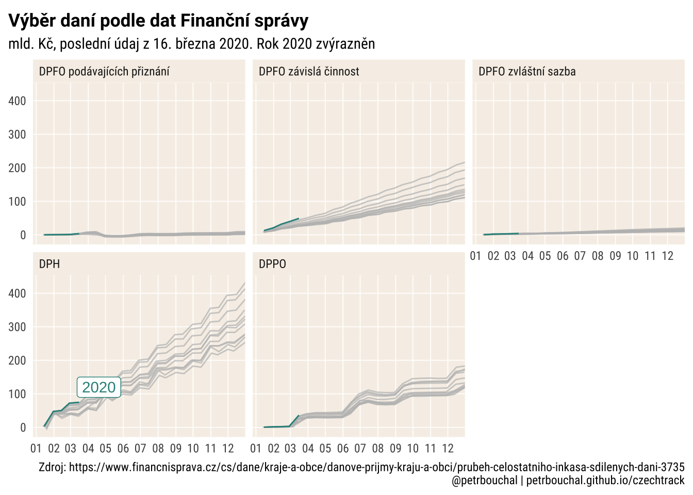

Česká rozpočtová data
Výběr daní
Časové řady
ggplot(all %>%
# filter(nazev == "DPH") %>%
filter(!str_detect(nazev, "hazard|technick|LOTER")) %>%
filter(TRUE),
aes(date_aligned, value/1e9, colour = rok, group = grp)) +
geom_line(aes(group = rok)) +
gghighlight::gghighlight(calculate_per_facet = T, rok == 2020, use_group_by = T) +
facet_wrap(~ nazev) +
# theme_schola("scatter", multiplot = T, plot.caption.position = "plot",
# family = "sans",title_family = "sans") +
theme_schola("scatter", multiplot = T, plot.caption.position = "plot") +
scale_color_viridis_c(labels = scales::label_number(accuracy = 1, big.mark = "")) +
scale_x_date(labels = scales::label_date(format = "%m"), date_breaks = "months",
expand = expansion(c(0.05, 0))) +
labs(x = "den v roce", title = "Výběr daní podle dat Finanční správy",
subtitle = str_glue("mld. Kč, poslední údaj z {latest}. Rok 2020 zvýrazněn"),
caption = "Zdroj: https://www.financnisprava.cz/cs/dane/kraje-a-obce/danove-prijmy-kraju-a-obci/prubeh-celostatniho-inkasa-sdilenych-dani-3735")
Meziroční srovnání
library(scales)
# https://gist.github.com/mikmart/bfbf62839fbdd162b4b88e6d43e0c858
c_trans <- function(a, b, breaks = b$breaks, format = b$format) {
a <- scales::as.trans(a)
b <- scales::as.trans(b)
name <- paste(a$name, b$name, sep = "-")
trans <- function(x) a$trans(b$trans(x))
inv <- function(x) b$inverse(a$inverse(x))
scales::trans_new(name, trans, inv, breaks, format = format)
}
rev_date <- c_trans("reverse", "date")
all_diffs %>%
ggplot(aes(date_aligned, narust)) +
geom_hline(yintercept = 0) +
geom_point(alpha = .6, colour = "red", size = 2) +
coord_flip() +
scale_x_continuous(trans = rev_date, labels = label_date("%b"), n.breaks = 12) +
scale_y_continuous(limits = c(-1, 1), labels = label_percent(suffix = " %")) +
gghighlight::gghighlight(rok == 2020, unhighlighted_params = list(alpha = .3)) +
facet_wrap(~ nazev) + theme_schola("scatter", multiplot = T) +
labs(title = "Meziroční změna výnosu vybraných daní podle období",
subtitle = "rok 2020 zvýrazněn; extrémní hodnoty vynechány.")
Zdroje
Nejnovější dostupné datové exporty Monitoru státní pokladny
library(jsonlite)
library(httr)
library(dplyr)
library(tidyr)
td <- GET("https://monitor.statnipokladna.cz/api/transakcni-data?aktivni=true",
accept_json()) %>%
content(as = "text") %>%
fromJSON()
xx <- td %>%
unnest(dataExtracts, .name_repair = "universal")
xx %>%
group_by(titleCS) %>%
filter(!deleted, year == max(year)) %>%
filter(month == max(month)) %>%
select(titleCS, year, month, filenamePeriod)Naposledy aktualizováno 02. dubna 2020 10:46 CEST.
LS0tCnRpdGxlOiAixIxlc2vDoSByb3pwb8SNdG92w6EgZGF0YSIKb3V0cHV0OgogIGh0bWxfZG9jdW1lbnQ6CiAgICB0b2M6IGZhbHNlCi0tLQoKYGBge3Igc2V0dXAsIGVjaG8gPSBGLCBtZXNzYWdlPUYsIGluY2x1ZGU9RiwgZXZhbCA9IFR9ClN5cy5zZXRsb2NhbGUoIkxDX0FMTCIsICJjc19DWi5VVEYtOCIpCgprbml0cjo6b3B0c19jaHVuayRzZXQoaW5jbHVkZSA9IEYsIHdhcm5pbmcgPSBGLCBtZXNzYWdlID0gRiwgZmlnLnNob3d0ZXh0PVRSVUUpCgpsaWJyYXJ5KHRpZHl2ZXJzZSkKbGlicmFyeShydmVzdCkKbGlicmFyeShsdWJyaWRhdGUpCmxpYnJhcnkoc2hvd3RleHQpCgpgYGAKCmBgYHtyfQpzeXNmb250czo6Zm9udF9hZGRfZ29vZ2xlKGZhbWlseSA9ICJyYnRjIiwgbmFtZSA9ICJSb2JvdG8gQ29uZGVuc2VkIikKc3lzZm9udHM6OmZvbnRfYWRkX2dvb2dsZShmYW1pbHkgPSAicmJ0IiwgbmFtZSA9ICJSb2JvdG8iKQpzeXNmb250czo6Zm9udF9mYW1pbGllcygpCnNob3d0ZXh0X2F1dG8oKQpgYGAKCgpgYGB7cn0KdGhlbWVfc2Nob2xhIDwtIGZ1bmN0aW9uKGdyaWRsaW5lcyA9IGMoInkiLCAieCIsICJib3RoIiwgInNjYXR0ZXIiKSwKICAgICAgICAgICAgICAgICAgICAgICAgIGJhc2Vfc2l6ZSA9IDExLAogICAgICAgICAgICAgICAgICAgICAgICAgZmFtaWx5ID0gInJidGMiLCB0aXRsZV9mYW1pbHkgPSAicmJ0IiwKICAgICAgICAgICAgICAgICAgICAgICAgIG1hcmdpbl9zaWRlID0gNiwKICAgICAgICAgICAgICAgICAgICAgICAgIG1hcmdpbl9ib3R0b20gPSA2LAogICAgICAgICAgICAgICAgICAgICAgICAgcGxvdC50aXRsZS5wb3NpdGlvbiA9ICJwbG90IiwKICAgICAgICAgICAgICAgICAgICAgICAgIGF4aXMudGl0bGUgPSBnZ3Bsb3QyOjplbGVtZW50X2JsYW5rKCksCiAgICAgICAgICAgICAgICAgICAgICAgICBtdWx0aXBsb3QgPSBGQUxTRSwKICAgICAgICAgICAgICAgICAgICAgICAgIC4uLikgewogIHRvbmVjb2wgPC0gIiNmNmYwZTgiCiAgZ3JkIDwtIG1hdGNoLmFyZyhncmlkbGluZXMpCiAgZ3JpZF9jb2wgPC0gaWYoZ3JkID09ICJzY2F0dGVyIiB8IG11bHRpcGxvdCkgIndoaXRlIiBlbHNlICJncmV5OTIiCiAgYmdfY29sIDwtIGlmKGdyZCA9PSAic2NhdHRlciIgfCBtdWx0aXBsb3QpIHRvbmVjb2wgZWxzZSAid2hpdGUiCiAgZWxlbWVudF9ncmlkbGluZSA8LSBnZ3Bsb3QyOjplbGVtZW50X2xpbmUoY29sb3VyID0gZ3JpZF9jb2wsIHNpemUgPSAwLjMpCiAgdGhtIDwtIGdncGxvdDI6OnRoZW1lX21pbmltYWwoYmFzZV9zaXplID0gYmFzZV9zaXplLCBiYXNlX2ZhbWlseSA9IGZhbWlseSkgKwogICAgZ2dwbG90Mjo6dGhlbWUocGxvdC50aXRsZS5wb3NpdGlvbiA9IHBsb3QudGl0bGUucG9zaXRpb24sCiAgICAgICAgICAgICAgICAgICBwbG90LnRpdGxlID0gZ2dwbG90Mjo6ZWxlbWVudF90ZXh0KGZhY2UgPSAiYm9sZCIsCiAgICAgICAgICAgICAgICAgICAgICAgICAgICAgICAgICAgICAgICAgICAgICAgICAgICAgIHNpemUgPSBiYXNlX3NpemUgKiAxLjIsCiAgICAgICAgICAgICAgICAgICAgICAgICAgICAgICAgICAgICAgICAgICAgICAgICAgICAgIGZhbWlseSA9IHRpdGxlX2ZhbWlseSksCiAgICAgICAgICAgICAgICAgICBwYW5lbC5ncmlkLm1pbm9yID0gZ2dwbG90Mjo6ZWxlbWVudF9ibGFuaygpLAogICAgICAgICAgICAgICAgICAgcGFuZWwuZ3JpZC5tYWpvci54ID0gaWYoZ3JkICE9ICJ5IikKICAgICAgICAgICAgICAgICAgICAgZWxlbWVudF9ncmlkbGluZSBlbHNlIGdncGxvdDI6OmVsZW1lbnRfYmxhbmsoKSwKICAgICAgICAgICAgICAgICAgIHBhbmVsLmdyaWQubWFqb3IueSA9IGlmKGdyZCAhPSAieCIpCiAgICAgICAgICAgICAgICAgICAgIGVsZW1lbnRfZ3JpZGxpbmUgZWxzZSBnZ3Bsb3QyOjplbGVtZW50X2JsYW5rKCksCiAgICAgICAgICAgICAgICAgICAjIGF4aXMubGluZSA9IGdncGxvdDI6OmVsZW1lbnRfbGluZSgpLAogICAgICAgICAgICAgICAgICAgcGFuZWwuYmFja2dyb3VuZCA9IGdncGxvdDI6OmVsZW1lbnRfcmVjdChmaWxsID0gYmdfY29sLAogICAgICAgICAgICAgICAgICAgICAgICAgICAgICAgICAgICAgICAgICAgICAgICAgICAgICAgICAgICBjb2xvdXIgPSBOQSksCiAgICAgICAgICAgICAgICAgICBheGlzLnRpdGxlID0gYXhpcy50aXRsZSwKICAgICAgICAgICAgICAgICAgIHN0cmlwLnRleHQueCA9IGdncGxvdDI6OmVsZW1lbnRfdGV4dChoanVzdCA9IDApLAogICAgICAgICAgICAgICAgICAgcGxvdC5tYXJnaW4gPSBnZ3Bsb3QyOjp1bml0KGMoMTAsIG1hcmdpbl9zaWRlLAogICAgICAgICAgICAgICAgICAgICAgICAgICAgICAgICAgICAgICAgICAgICAgICAgbWFyZ2luX2JvdHRvbSwgbWFyZ2luX3NpZGUpLAogICAgICAgICAgICAgICAgICAgICAgICAgICAgICAgICAgICAgICAgICAgICAgIHVuaXRzID0gInB0IikpCiAgaWYobXVsdGlwbG90KSB0aG0gPC0gdGhtICsKICAgIGdncGxvdDI6OnRoZW1lKHN0cmlwLmJhY2tncm91bmQgPSBnZ3Bsb3QyOjplbGVtZW50X3JlY3QoZmlsbCA9IHRvbmVjb2wsCiAgICAgICAgICAgICAgICAgICAgICAgICAgICAgICAgICAgICAgICAgICAgICAgICAgICAgICAgICAgIGNvbG91ciA9IE5BKSkKCiAgdGhtIDwtIHRobSArCiAgICBnZ3Bsb3QyOjp0aGVtZSguLi4pCgogIHJldHVybih0aG0pCn0KYGBgCgoKYGBge3IgZ2V0IGRhdGF9CmRhbl92eW5vc3kwIDwtIHJlYWRfaHRtbCgiaHR0cHM6Ly93d3cuZmluYW5jbmlzcHJhdmEuY3ovY3MvZGFuZS9rcmFqZS1hLW9iY2UvZGFub3ZlLXByaWpteS1rcmFqdS1hLW9iY2kvcHJ1YmVoLWNlbG9zdGF0bmloby1pbmthc2Etc2RpbGVueWNoLWRhbmktMzczNSIpICU+JSAKICBodG1sX3RhYmxlKGZpbGwgPSBULCBkZWMgPSAiLCIpCgpkYW5fdnlub3N5IDwtIGRhbl92eW5vc3kwW1syXV1bLDE6OF0gJT4lCiAgIyBmaWx0ZXIoc3RyX2RldGVjdCguWywxXSwgIjIwMTgiKSkgJT4lICMgaXMgdGhpcyB0YmwgZm9yIDIwMTg/IElmLCBub3QsIGNoYW5nZSBpbmRleCBhYm92ZQogIHNldF9uYW1lcyhkYW5fdnlub3N5MFtbMl1dWzIsMTo4XSkgJT4lIAogIHNsaWNlKDM6bigpKSAlPiUgCiAgcGl2b3RfbG9uZ2VyKC1EQVRVTSkgJT4lCiAgbXV0YXRlKHZhbHVlID0gc3RyX3JlbW92ZV9hbGwodmFsdWUsICIgIikgJT4lIAogICAgICAgICAgIHN0cl9yZXBsYWNlKCIsIiwgIi4iKSAlPiUgCiAgICAgICAgICAgYXMubnVtZXJpYyh2YWx1ZSksCiAgICAgICAgIG5hbWUgPSBzdHJfcmVwbGFjZV9hbGwobmFtZSwgIiBcbiAiLCAiICIpKQoKZGFuX3Z5bm9zeV9hbGwgPC0gYmluZF9yb3dzKGRhbl92eW5vc3kwKQoKbXVuZ2VfeWVhciA8LSBmdW5jdGlvbihkZikgewogIGRmZiA8LSBkZlssMTptaW4obmNvbChkZiksIDgpXQogIGRmZmYgPC0gc2V0X25hbWVzKGRmZiwgZGZmWzIsXSkKICBkZmZmICU+JSAKICAgIHNsaWNlKDM6bigpKSAlPiUgCiAgICBwaXZvdF9sb25nZXIoLURBVFVNKSAlPiUKICAgIG11dGF0ZSh2YWx1ZSA9IHN0cl9yZW1vdmVfYWxsKHZhbHVlLCAiICIpICU+JSAKICAgICAgICAgICAgIHN0cl9yZXBsYWNlKCIsIiwgIi4iKSAlPiUgCiAgICAgICAgICAgICBhcy5udW1lcmljKHZhbHVlKSwKICAgICAgICAgICBuYW1lID0gc3RyX3JlcGxhY2VfYWxsKG5hbWUsICIgXG4gIiwgIiAiKSkKfQoKYWxsIDwtIG1hcF9kZnIoZGFuX3Z5bm9zeTAsIG11bmdlX3llYXIpICU+JSAKICBtdXRhdGUoZGF0dW0gPSBzdHJfcmVtb3ZlKERBVFVNLCAiaW5rYXNvIGsgIiksCiAgICAgICAgIGRhdHVtX3BhcnNlZCA9IGx1YnJpZGF0ZTo6ZG15KGRhdHVtKSwKICAgICAgICAgcm9rID0gbHVicmlkYXRlOjp5ZWFyKGRhdHVtX3BhcnNlZCksCiAgICAgICAgIG1lc2ljID0gbHVicmlkYXRlOjptb250aChkYXR1bV9wYXJzZWQpLAogICAgICAgICBkZW4gPSBsdWJyaWRhdGU6OmRheShkYXR1bV9wYXJzZWQpLAogICAgICAgICBkZW52cm9jZSA9IGx1YnJpZGF0ZTo6eWRheShkYXR1bV9wYXJzZWQpLAogICAgICAgICBuYXpldiA9IHN0cl9zcXVpc2gobmFtZSksCiAgICAgICAgIGdycCA9IHBhc3RlKHJvaywgbmF6ZXYpKSAlPiUgCiAgZmlsdGVyKG5hemV2ICE9ICJOQSIpICU+JSAKICBtdXRhdGUoZGF0ZV9hbGlnbmVkID0gbWFrZV9kYXRlKCIyMDAwIiwgbWVzaWMsIGRlbikpCgpsYXRlc3QgPC0gbWF4KGFsbCRkYXR1bV9wYXJzZWQsIG5hLnJtID0gVCkgJT4lIGZvcm1hdCgiJWQuICVCICVZIikKYGBgCgojIyBWw71ixJtyIGRhbsOtIHsudGFic2V0fQoKIyMjIMSMYXNvdsOpIMWZYWR5CgpgYGB7ciBpbmNsdWRlPVR9CmdncGxvdChhbGwgJT4lIAogICAgICAgICAjIGZpbHRlcihuYXpldiA9PSAiRFBIIikgJT4lCiAgICAgICAgIGZpbHRlcighc3RyX2RldGVjdChuYXpldiwgImhhemFyZHx0ZWNobmlja3xMT1RFUiIpKSAlPiUKICAgICAgICAgZmlsdGVyKFRSVUUpLCAKICAgICAgIGFlcyhkYXRlX2FsaWduZWQsIHZhbHVlLzFlOSwgY29sb3VyID0gcm9rLCBncm91cCA9IGdycCkpICsKICBnZW9tX2xpbmUoYWVzKGdyb3VwID0gcm9rKSkgKwogIGdnaGlnaGxpZ2h0OjpnZ2hpZ2hsaWdodChjYWxjdWxhdGVfcGVyX2ZhY2V0ID0gVCwgcm9rID09IDIwMjAsIHVzZV9ncm91cF9ieSA9IFQpICsKICBmYWNldF93cmFwKH4gbmF6ZXYpICsgCiAgIyB0aGVtZV9zY2hvbGEoInNjYXR0ZXIiLCBtdWx0aXBsb3QgPSBULCBwbG90LmNhcHRpb24ucG9zaXRpb24gPSAicGxvdCIsCiAgIyAgICAgICAgICAgICAgZmFtaWx5ID0gInNhbnMiLHRpdGxlX2ZhbWlseSA9ICJzYW5zIikgKyAKICB0aGVtZV9zY2hvbGEoInNjYXR0ZXIiLCBtdWx0aXBsb3QgPSBULCBwbG90LmNhcHRpb24ucG9zaXRpb24gPSAicGxvdCIpICsgCiAgc2NhbGVfY29sb3JfdmlyaWRpc19jKGxhYmVscyA9IHNjYWxlczo6bGFiZWxfbnVtYmVyKGFjY3VyYWN5ID0gMSwgYmlnLm1hcmsgPSAiIikpICsKICBzY2FsZV94X2RhdGUobGFiZWxzID0gc2NhbGVzOjpsYWJlbF9kYXRlKGZvcm1hdCA9ICIlbSIpLCBkYXRlX2JyZWFrcyA9ICJtb250aHMiLCAKICAgICAgICAgICAgICAgZXhwYW5kID0gZXhwYW5zaW9uKGMoMC4wNSwgMCkpKSArCiAgbGFicyh4ID0gImRlbiB2IHJvY2UiLCB0aXRsZSA9ICJWw71ixJtyIGRhbsOtIHBvZGxlIGRhdCBGaW5hbsSNbsOtIHNwcsOhdnkiLAogICAgICAgc3VidGl0bGUgPSBzdHJfZ2x1ZSgibWxkLiBLxI0sIHBvc2xlZG7DrSDDumRhaiB6IHtsYXRlc3R9LiBSb2sgMjAyMCB6dsO9cmF6bsSbbiIpLAogICAgICAgY2FwdGlvbiA9ICJaZHJvajogaHR0cHM6Ly93d3cuZmluYW5jbmlzcHJhdmEuY3ovY3MvZGFuZS9rcmFqZS1hLW9iY2UvZGFub3ZlLXByaWpteS1rcmFqdS1hLW9iY2kvcHJ1YmVoLWNlbG9zdGF0bmloby1pbmthc2Etc2RpbGVueWNoLWRhbmktMzczNSIpCmBgYAoKIyMjIE1lemlyb8SNbsOtIHNyb3Zuw6Fuw60KCmBgYHtyfQphbGwgJT4lIAogIGdyb3VwX2J5KHJvaywgbWVzaWMsIG5hemV2KSAlPiUgCiAgbXV0YXRlKGlzX21pZGRsZSA9IGJldHdlZW4oZGVuLCAxMCwgMjApKSAlPiUgCiAgc3VtbWFyaXNlKGhhc19taWRkbGUgPSBhbnkoaXNfbWlkZGxlKSkgJT4lIAogIGZpbHRlcighaGFzX21pZGRsZSkKYGBgCgpgYGB7cn0KYWxsICU+JSAKICBncm91cF9ieShyb2ssIG1lc2ljLCBuYXpldikgJT4lIAogIG11dGF0ZShpc19lbmQgPSBiZXR3ZWVuKGRlbiwgMjUsIDMxKSkgJT4lIAogIHN1bW1hcmlzZShoYXNfZW5kID0gYW55KGlzX2VuZCkpICU+JSAKICBncm91cF9ieShyb2ssIGhhc19lbmQpICU+JSAKICBjb3VudCgpCmBgYAoKCgpgYGB7cn0KYWxsX2RpZmZzIDwtIGFsbCAlPiUgCiAgZmlsdGVyKG5hemV2ICVpbiUgYygiRFBIIiwgIkRQRk8gesOhdmlzbMOhIMSNaW5ub3N0IiwgIkRQUE8iKSkgJT4lIAogIG11dGF0ZShpc19lbmQgPSBiZXR3ZWVuKGRlbiwgMjUsIDMxKSwKICAgICAgICAgaXNfbWlkZGxlID0gYmV0d2VlbihkZW4sIDEwLCAyMCkpICU+JSAKICBmaWx0ZXIoaXNfbWlkZGxlIHwgaXNfZW5kKSAlPiUgCiAgbXV0YXRlKG1vbnRoX3BhcnQgPSBpZmVsc2UoaXNfbWlkZGxlLCAibWlkZGxlIiwgImVuZCIpKSAlPiUgCiAgZ3JvdXBfYnkobWVzaWMsIG1vbnRoX3BhcnQsIG5hemV2KSAlPiUKICBhcnJhbmdlKG5hemV2LCBtZXNpYywgcm9rKSAlPiUgCiAgbXV0YXRlKG5hcnVzdCA9IHZhbHVlL2xhZyh2YWx1ZSkgLSAxKQoKaGlzdChhbGxfZGlmZnMkbmFydXN0KQpgYGAKCmBgYHtyLCBpbmNsdWRlPVR9CmxpYnJhcnkoc2NhbGVzKQojIGh0dHBzOi8vZ2lzdC5naXRodWIuY29tL21pa21hcnQvYmZiZjYyODM5ZmJkZDE2MmI0Yjg4ZTZkNDNlMGM4NTgKCmNfdHJhbnMgPC0gZnVuY3Rpb24oYSwgYiwgYnJlYWtzID0gYiRicmVha3MsIGZvcm1hdCA9IGIkZm9ybWF0KSB7CiAgYSA8LSBzY2FsZXM6OmFzLnRyYW5zKGEpCiAgYiA8LSBzY2FsZXM6OmFzLnRyYW5zKGIpCgogIG5hbWUgPC0gcGFzdGUoYSRuYW1lLCBiJG5hbWUsIHNlcCA9ICItIikKCiAgdHJhbnMgPC0gZnVuY3Rpb24oeCkgYSR0cmFucyhiJHRyYW5zKHgpKQogIGludiA8LSBmdW5jdGlvbih4KSBiJGludmVyc2UoYSRpbnZlcnNlKHgpKQoKICBzY2FsZXM6OnRyYW5zX25ldyhuYW1lLCB0cmFucywgaW52LCBicmVha3MsIGZvcm1hdCA9IGZvcm1hdCkKfQoKcmV2X2RhdGUgPC0gY190cmFucygicmV2ZXJzZSIsICJkYXRlIikKCmFsbF9kaWZmcyAlPiUgCiAgZ2dwbG90KGFlcyhkYXRlX2FsaWduZWQsIG5hcnVzdCkpICsKICBnZW9tX2hsaW5lKHlpbnRlcmNlcHQgPSAwKSArCiAgZ2VvbV9wb2ludChhbHBoYSA9IC42LCBjb2xvdXIgPSAicmVkIiwgc2l6ZSA9IDIpICsKICBjb29yZF9mbGlwKCkgKwogIHNjYWxlX3hfY29udGludW91cyh0cmFucyA9IHJldl9kYXRlLCBsYWJlbHMgPSBsYWJlbF9kYXRlKCIlYiIpLCBuLmJyZWFrcyA9IDEyKSArCiAgc2NhbGVfeV9jb250aW51b3VzKGxpbWl0cyA9IGMoLTEsIDEpLCBsYWJlbHMgPSBsYWJlbF9wZXJjZW50KHN1ZmZpeCA9ICIgJSIpKSArCiAgZ2doaWdobGlnaHQ6OmdnaGlnaGxpZ2h0KHJvayA9PSAyMDIwLCB1bmhpZ2hsaWdodGVkX3BhcmFtcyA9IGxpc3QoYWxwaGEgPSAuMykpICsKICBmYWNldF93cmFwKH4gbmF6ZXYpICsgdGhlbWVfc2Nob2xhKCJzY2F0dGVyIiwgbXVsdGlwbG90ID0gVCkgKwogIGxhYnModGl0bGUgPSAiTWV6aXJvxI1uw60gem3Em25hIHbDvW5vc3UgdnlicmFuw71jaCBkYW7DrSBwb2RsZSBvYmRvYsOtIiwKICAgICAgIHN1YnRpdGxlID0gInJvayAyMDIwIHp2w71yYXpuxJtuOyBleHRyw6ltbsOtIGhvZG5vdHkgdnluZWNow6FueS4iKQpgYGAKCgoKIyMgWmRyb2plCgojIyMgTmVqbm92xJtqxaHDrSBkb3N0dXBuw6kgZGF0b3bDqSBleHBvcnR5IE1vbml0b3J1IHN0w6F0bsOtIHBva2xhZG55CgpgYGB7ciwgaW5jbHVkZT1UfQpsaWJyYXJ5KGpzb25saXRlKQpsaWJyYXJ5KGh0dHIpCmxpYnJhcnkoZHBseXIpCmxpYnJhcnkodGlkeXIpCgoKdGQgPC0gR0VUKCJodHRwczovL21vbml0b3Iuc3RhdG5pcG9rbGFkbmEuY3ovYXBpL3RyYW5zYWtjbmktZGF0YT9ha3Rpdm5pPXRydWUiLAogICAgICAgICAgYWNjZXB0X2pzb24oKSkgJT4lCiAgY29udGVudChhcyA9ICJ0ZXh0IikgJT4lCiAgZnJvbUpTT04oKQoKeHggPC0gdGQgJT4lCiAgdW5uZXN0KGRhdGFFeHRyYWN0cywgLm5hbWVfcmVwYWlyID0gInVuaXZlcnNhbCIpCgp4eCAlPiUKICBncm91cF9ieSh0aXRsZUNTKSAlPiUKICBmaWx0ZXIoIWRlbGV0ZWQsIHllYXIgPT0gbWF4KHllYXIpKSAlPiUKICBmaWx0ZXIobW9udGggPT0gbWF4KG1vbnRoKSkgJT4lCiAgc2VsZWN0KHRpdGxlQ1MsIHllYXIsIG1vbnRoLCBmaWxlbmFtZVBlcmlvZCkKYGBgCgoKTmFwb3NsZWR5IGFrdHVhbGl6b3bDoW5vIGByIGZvcm1hdChsdWJyaWRhdGU6Om5vdyh0em9uZSA9ICJDRVQiKSwgIiVkLiAlQiAlWSAlSDolTSAlWiIpYC4K